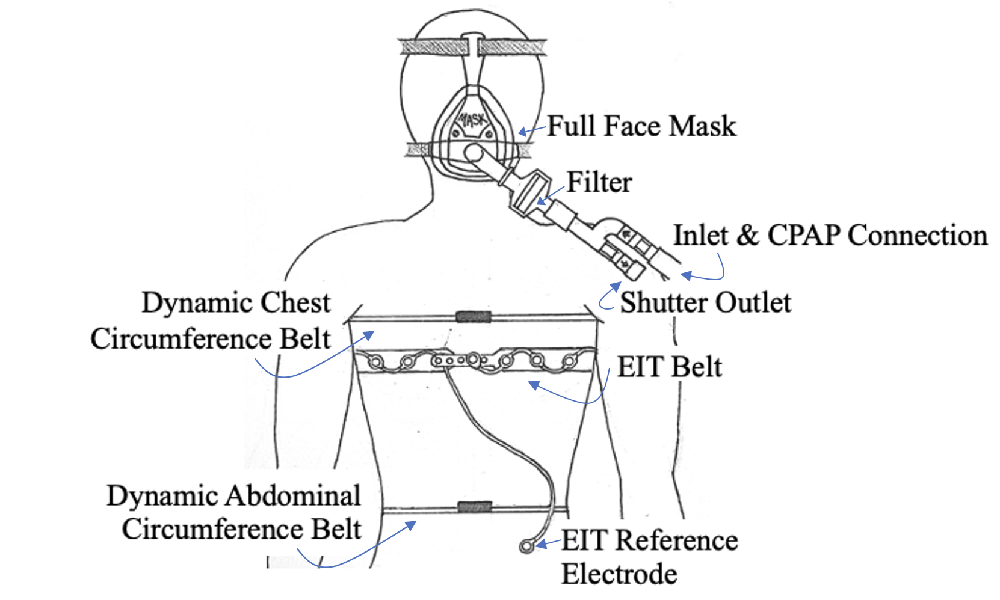

Expiratory occlusion is a technique used to measure the mechanical properties of the respiratory system. This interactive exploration visualizes expiratory occlusions from 80 participants with various lung conditions.
We used data from the paper Respiratory dataset from PEEP study with expiratory occlusion. The data was collected from 80 participants with various lung conditions. The participants were split evenly into groups based on sex and lung condition as either asthmatic, smoker, vaper, or healthy. The information about the participants were self-reported as well as measured. The sex (M/F), height (cm), weight (kg), age (years), and history of asthma, smoking, and vaping was self-reported using a questionnaire. The initial chest width and depth were measured. An example of the setup is shown below.

[write about data collection methods]
You can download the dataset
here.